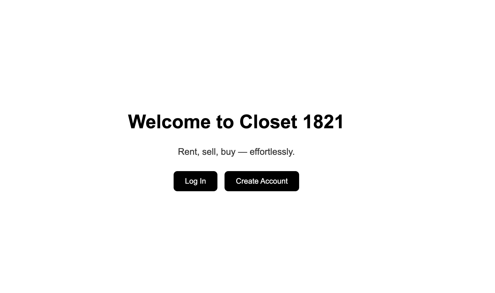

Risk3Sixty AI/GRC Fine-Tuning Project
This project involved developing a fine-tuned AI assistant for cybersecurity governance, risk, and compliance workflows. The goal was to support more consistent and domain-specific outputs for tasks such as formal audit findings, control support, and evidence request drafting. My work involved organizing training data, thinking through model behavior, evaluating outputs, and communicating technical decisions to stakeholders. This project demonstrates my ability to connect artificial intelligence, software engineering, and technical communication. It also shows how I explain complex AI systems in a practical way for both technical and business audiences.
View Risk3Sixty ProjectCloset 1821 Web App

Closet 1821 is a full-stack web application I built to help users rent, sell, and browse clothing items. The app includes user authentication, item uploads, image storage, product cards, item detail modals, and seller contact features. I worked with a React frontend and Flask backend, using the project to practice both interface design and full-stack development. This project illustrates my growth as a technical communicator because I had to make the platform intuitive for users while also organizing the technical structure behind the scenes. It reflects my interest in building practical software that is visually clear, usable, and connected to real user needs.
Visit Closet 1821